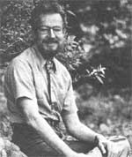
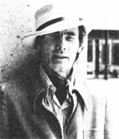
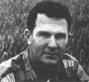

There's a constant hum and bustle of activity at Rodale Press in Emmaus, Pennsylvania, where Robert Rodale carries on the work his father started: chiefly, the editorship of both Organic Gardening and Farming and Prevention magazines, but-in addition-a great number of other worthwhile efforts.
One such ongoing enterprise is a thriving book publishing operation. Then there's a new Rodale Press division called Rodale Resources, under the auspices of which the Energy-Cyclea pedal-powered generator for rotary-driven tools such as grain mills-has been developed. And, for garden work, Rodale Resources has come up with the Mechanical Mule "' , a plow, row-maker, cultivator, etc., that's also pedal-powered.
The Research and Development division has a successful tempeh project underway, with over 14,000 packets of starter-and instructions for preparing the fermented soybean food-already distributed to readers of Organic Gardening and Farming.
What else? The company's 305-acre New Organic Gardening Experimental Farm has just completed its fourth year of growing amaranth, an ancient crop now being cultivated for its high-protein grain and nutrientrich greens. Work with a freestanding solar greenhouse, a methane digester, Colonial herb gardens, and garden interplanting is also being done at the farm. And the original 76-acre Rodale Press farm is gradually being planted in trees and converted to a demonstration of edible ornamental tree plantings.
But that's not all. At the Emmaus company's Mountain Springs site, 18 backyardsized ponds and five indoor tankswith capacities ranging from 2,000 to 3,200 gallons-are being set up for aquaculture experiments. Such fish as trout, catfish, bluegills, and carp will be raised in these facilities, and project findings will be relayed-along with aquaculture instructions-to interested backyard gardeners.
While overseeing all of this, Robert Rodale still finds time for travel and public speaking. If you asked him, he'd probably tell you that his energy comes from his optimism, because he's quite earnest when he says, "My vision of our future is a hopeful one. We're going to survive ... as a nation and as individuals."
'Writers go on writing ... and writing ... always hoping to make a difference in the world. Books are bread cast upon the water." That's how Theodore Roszak practically shrugs off his impressive succession of significant books ... books that have made a difference in the world.
The Chicago-born writer, college professor (he teaches history at California State College at Hayward), public speaker, and humanist has just finished the latest of a list of works that includes The Making of a Counter Culture, Pontifax (a play), The Dissenting Academy (which he edited), Masculine/ Feminine (which he co-edited with Betty Roszak), Sources (an anthology he edited), and Unfinished Animal: The Aquarian Frontier and the Evolution of Consciousness.
Scheduled for 1978 release is his Person/ Planet, which he describes as "an effort to give a global, ecological interpretation to the peculiarly personalist style of contemporary culture and politics".
Roszak adds, "I believe I've found a deep, personal way to come at the environmental problems that often become 'too big' and too technical for people to take into their daily lives.
"My argument is that there is a point at which we experience with the planet ... like a baby picking up its mother's vibrations through the umbilical cord. Only-for usthose vibrations have to become culture: a conscious set of images and ideas.
"Person/Planet has much to do with family, school, and work on the human scale. There's also a long critique of the culture and economics of the modern city, which is meant to be a special challenge to all of us urban intellectuals who have a special, vested interest in the bigness of cities.
"I think it's the most important book I've written," Roszak concludes, ''and it's proba. bly the last for some time. After a while, one has to start living somewhere besides inside one's head."
That may be ... but if you had to live inside someone's head, we can't think of a more fas cinating noggin to choose than the one on Ted, Roszak's shoulders!
No one knows better than Frank Ford that these are dark days for our planet And Frank's pretty sure that things will get a lot worse before they get better. Yet-somehow-the founder of Arrowhead Mills maiming tains his faith in the eventual triumph Nature over the unnatural.
"During the sixties, as I and many others struggled uphill to renew our diet and farming methods, we were ridiculed," he recalls ''Now we see the big food companies eam, bling all over themselves to counterfeit word 'natural' in their new products. We've gotten their attention . . . and a few products from the large companies genuinely are bet than before.
"It's important to fight for the right things in our society, which is basically a sick society ... physically and in other ways," Frank clares. And the plain-spoken Texan has indeed fought for a better world for most of his life.
For one thing, he's farmed organically Deaf Smith County for 25 years. Besides that in 1960 he started a company (Arrowhead Mills, Inc.) that became one of the first major distributors of whole grains in this country. Is the years since then, he's served on advisory committees to four different U.S. Secretaries of Agriculture. His The Simpler Life , Cookbook has sold a quarter of a million copies, as has The Deaf Smith Country Cookbook, a book authored by his wife, Margie.
Frank Ford intends "to continue to prove on the farm and in the marketplace-that organically, ecologically, biologically grown foods are the best way...not only for our vironment but for our bodies.
"My perpetual goal," he says, "is to market the very best foods from the most dedicate farmers in the nation. Because whole to grown on fertile soil and eaten fresh, is 'when it's at'."
Are you up on the latest doings of some someone (such as any of the innovative pioneers featured in MOTHER'S Plowboy Interviews) who's achieved recognition in a field regular covered by this magazine? If so, send us tightly written 200-word report on that peak (along with a snappy black-and-white, used photograph), and-providing your report is used NEWSWORTHIES-we'll gladly send you$ flat $50 ($25 without the photo). Send contributions to NEWSWORTHIES Editor, THE Mother Earth News! P.O. Box 70, Hendersonville, N.C. 28739.
|
|
 |
 |
|
 |
|
|